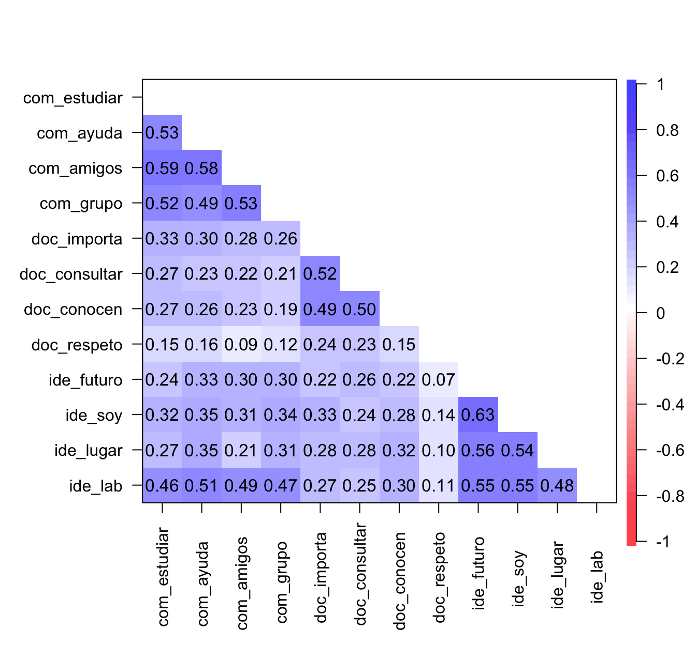
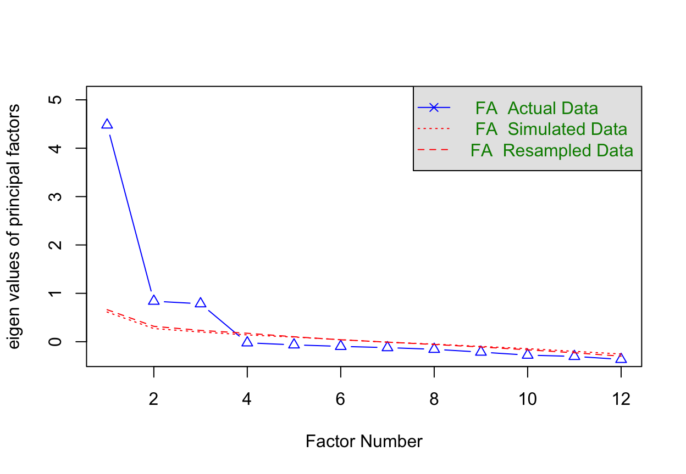
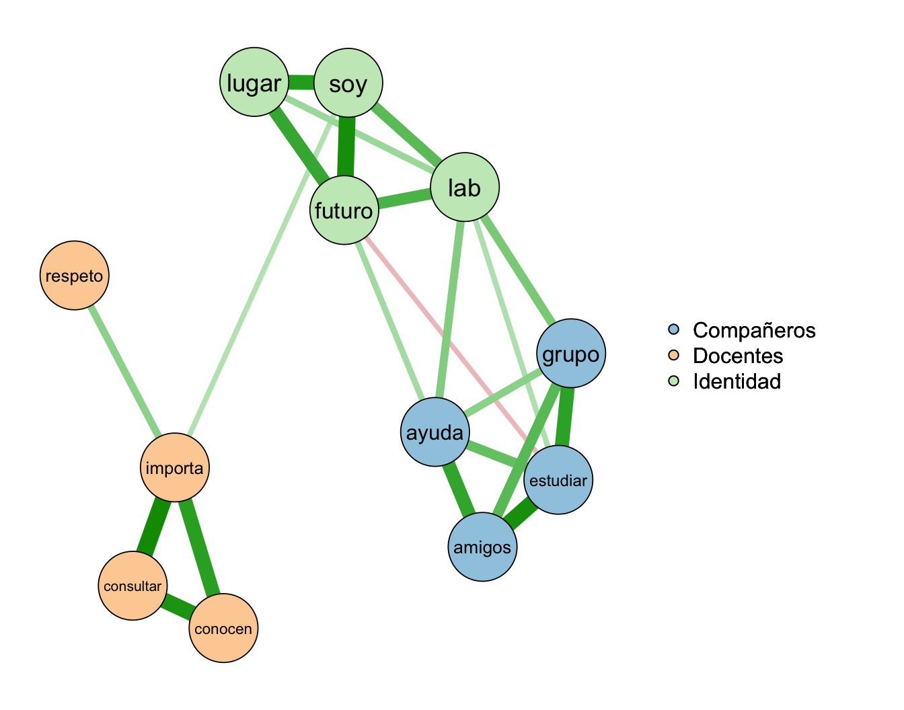

library(psych) # fa.parallel(), fa(), alpha(), corPlot()
library(GPArotation) # la rotación oblimin que usa fa()
library(lavaan) # cfa(), fitMeasures()
library(semTools) # compRelSEM(): omega desde el AFC
library(qgraph) # EBICglasso() y qgraph(), para la sección 10
library(EGAnet) # EGA(), para la sección 103 Análisis factorial: las dimensiones de un constructo
| Sección | Contenido | Datos |
|---|---|---|
| 1. Constructo, dimensión, factor | El vocabulario, y el modelo con varios factores | — |
| 2. Los datos | Doce ítems de pertenencia a la carrera, en tres dimensiones | Simulación |
| 3. ¿Cuántos factores? | Mapa de correlaciones y análisis paralelo | Mitad A |
| 4. Análisis factorial exploratorio | La tabla de cargas, la carga cruzada y el ítem débil | Mitad A |
| 5. Análisis factorial confirmatorio | ¿Ajusta la estructura que propusimos? | Mitad B |
| 6. Confiabilidad por dimensión | Por qué el alfa del total engaña | Escala final |
| 7. ¿Se puede sumar todo? | Factores correlacionados, segundo orden, bifactor; invarianza | Mitad B |
| 8. Usar una subescala sola | Cuándo se puede y cuándo no, con las escalas de la encuesta | Simulación y artículos |
| 9. En tu encuesta | Cuánta muestra habrá en la facultad, y el AFC de la ASES | Admisión 2026 |
| 10. ¿Y si no hay constructo? | Adelanto de la psicometría de redes | Simulación |
| 11. El mapa | Todos los términos en un diagrama | — |
3.1 Constructo, dimensión, factor
Tres palabras que se usan como sinónimos y conviene separar:
- El constructo es la idea teórica: sentido de pertenencia a la carrera. Vive en la definición operacional del capítulo 1.
- Una dimensión es una parte de esa idea que la teoría distingue: la pertenencia tiene que ver con los compañeros, con los docentes y con sentirse parte de la disciplina. En el capítulo 1 la ansiedad ante los exámenes tenía dos: preocupación y emocionalidad.
- Un factor es la variable latente \(\theta\) que representa una dimensión dentro de un modelo estadístico. Es el \(\theta\) del capítulo 1, ahora en plural.
Constructo y dimensión son teoría; factor es modelo. El análisis factorial es la herramienta que dice si los datos se comportan como la teoría predice: si los ítems que escribimos para una dimensión se mueven juntos, y separados de los de otra.
Con una sola dimensión, el modelo del capítulo 1 era \(X_j = \lambda_j\theta + \varepsilon_j\). Con varias, cada ítem puede depender de cada factor:
\[ X_j = \lambda_{j1}\,\theta_1 + \lambda_{j2}\,\theta_2 + \lambda_{j3}\,\theta_3 + \varepsilon_j. \]
Lo que esperamos de una escala bien construida es una estructura simple: cada ítem tiene una carga grande en su factor y cargas cercanas a cero en los demás. Un ítem con cargas grandes en dos factores tiene una carga cruzada, y casi siempre es un ítem que mezcla dos ideas.
NotaUna analogía de laboratorio
Vuelve a los termómetros del capítulo 1, pero ahora el laboratorio tiene tres salas a temperaturas distintas, y en cada sala hay cuatro termómetros. Si los mezclas sin etiqueta, las lecturas forman tres grupos: los de una misma sala suben y bajan juntos. El análisis factorial hace eso con los ítems. Recibe sus correlaciones y reconstruye cuántas “salas” hay y qué termómetro está en cuál. Un termómetro colgado en la puerta entre dos salas es la carga cruzada.
Pregunta 6. La ASES tiene dos factores: ítems 1–4 («Sé cómo organizar mi tiempo…», «Sé cómo tomar apuntes», «Sé cómo estudiar…», «Soy bueno haciendo trabajos escritos…») e ítems 5–8 («Soy un muy buen estudiante», «Normalmente obtengo muy buenas notas…», «Encuentro que mis actividades académicas son interesantes…», «Me siento seguro(a) de que podré enfrentar con éxito…»). ¿Qué nombre le pondrías a cada dimensión? ¿Hay algún ítem que te parezca mal ubicado?
3.2 Los datos
Inventamos una escala de sentido de pertenencia a la carrera con tres dimensiones y cuatro ítems por dimensión, en escala de 1 (Muy en desacuerdo) a 5 (Muy de acuerdo). No es una escala validada ni está en la encuesta: es un ejemplo, construido para fallar en dos lugares a propósito.
| Columna | Ítem | Dimensión |
|---|---|---|
com_estudiar |
«Tengo con quién estudiar en mi carrera.» | Compañeros |
com_ayuda |
«Si me complica un ramo, sé a qué compañero pedirle ayuda.» | Compañeros |
com_amigos |
«Tengo amigos entre mis compañeros de carrera.» | Compañeros |
com_grupo |
«Me siento parte de un grupo en mi generación.» | Compañeros |
doc_importa |
«Siento que a mis profesores les importa si aprendo.» | Docentes |
doc_consultar |
«Me siento cómodo/a consultando a mis profesores fuera de clase.» | Docentes |
doc_conocen |
«Mis profesores saben quién soy.» | Docentes |
doc_respeto |
«Mis profesores me tratan con respeto.» | Docentes |
ide_futuro |
«Me veo trabajando en mi disciplina en el futuro.» | Identidad |
ide_soy |
«Estudiar esta carrera es parte importante de quién soy.» | Identidad |
ide_lugar |
«Siento que esta carrera es mi lugar.» | Identidad |
ide_lab |
«Me gusta trabajar con mis compañeros en el laboratorio.» | Identidad |
Las dos fallas sembradas: ide_lab depende a la vez de la identidad y de los compañeros (habla de la disciplina y de los compañeros), y doc_respeto tiene techo: casi todo el mundo responde 4 o 5, así que distingue poco entre personas (regla 7 del capítulo 1).
set.seed(2026)
n <- 600 # estudiantes
# Tres factores latentes, correlacionados entre sí
Phi <- matrix(c(1.00, 0.30, 0.50,
0.30, 1.00, 0.40,
0.50, 0.40, 1.00), 3, 3)
Z <- MASS::mvrnorm(n, mu = rep(0, 3), Sigma = Phi)
verdad <- data.frame(companeros = Z[, 1], docentes = Z[, 2], identidad = Z[, 3])
# Un ítem = parte común + error, cortado en 5 categorías (1 a 5).
# comun: la combinación de factores; h2: la varianza que explica (comunalidad)
item <- function(comun, h2, cortes = c(-1.3, -0.4, 0.4, 1.3)) {
x <- comun + sqrt(1 - h2) * rnorm(n)
as.integer(cut(x, c(-Inf, cortes, Inf)))
}
com <- Z[, 1]; doc <- Z[, 2]; ide <- Z[, 3]
d <- data.frame(
com_estudiar = item(0.80 * com, 0.80^2),
com_ayuda = item(0.75 * com, 0.75^2),
com_amigos = item(0.80 * com, 0.80^2),
com_grupo = item(0.75 * com, 0.75^2),
doc_importa = item(0.80 * doc, 0.80^2),
doc_consultar = item(0.75 * doc, 0.75^2),
doc_conocen = item(0.70 * doc, 0.70^2),
doc_respeto = item(0.35 * doc, 0.35^2, # carga baja y techo:
cortes = c(-2.5, -2, -1.2, 0)), # casi todos responden 4 o 5
ide_futuro = item(0.80 * ide, 0.80^2),
ide_soy = item(0.80 * ide, 0.80^2),
ide_lugar = item(0.75 * ide, 0.75^2),
ide_lab = item(0.45 * ide + 0.45 * com, # carga cruzada
0.45^2 + 0.45^2 + 2 * 0.45 * 0.45 * 0.50)
)
write.csv(d, "datos/pertenencia_carrera.csv", row.names = FALSE)
table(d$doc_respeto)
1 2 3 4 5
1 10 48 224 317 Como en el capítulo 2, d es lo que tendríamos en una encuesta y verdad lo que nunca tenemos.
Una última preparación: partimos la muestra en dos mitades al azar. Con la mitad A exploramos; con la mitad B, que no hemos mirado, confirmamos. Explorar y confirmar con los mismos datos es hacerse trampa: el modelo confirmaría lo que el azar de esa muestra sugirió.
mitad <- sample(rep(c("A", "B"), each = n / 2))
A <- d[mitad == "A", ]
B <- d[mitad == "B", ]3.3 ¿Cuántos factores?
3.3.1 Primera mirada
corPlot(cor(A), numbers = TRUE, upper = FALSE, diag = FALSE, scale = FALSE,
main = "", xlas = 2, cex = 0.7)
ide_lab correlaciona con dos de ellos y doc_respeto es pálido con todos.
Antes de cualquier modelo, el mapa ya muestra tres bloques azules. Dos cosas rompen el patrón: la fila de ide_lab es azul tanto con los ítems de identidad como con los de compañeros, y la de doc_respeto es pálida con todos.
3.3.2 Análisis paralelo
¿Cuántos factores hay? La pregunta tiene una respuesta clásica: el análisis paralelo (Horn 1965). Compara cuánta varianza explica cada factor en tus datos con cuánta explicaría en datos al azar del mismo tamaño. Se quedan los factores que superan al azar.
paralelo <- fa.parallel(A, fa = "fa", cor = "poly", main = "")Parallel analysis suggests that the number of factors = 3 and the number of components = NA 
El análisis paralelo sugiere 3 factores, los mismos que predice la teoría. cor = "poly" usa correlaciones policóricas, las adecuadas para respuestas ordinales como las Likert: estiman cuánto correlacionarían los ítems si se respondieran en una escala continua en vez de cinco casillas.
3.4 Análisis factorial exploratorio
En el análisis factorial exploratorio (AFE) no le decimos al modelo qué ítem va con qué factor: solo cuántos factores buscar. Él estima todas las cargas, de todos los ítems en todos los factores.
afe <- fa(A, nfactors = 3, rotate = "oblimin", cor = "poly")
print(afe$loadings, cutoff = 0.30, sort = FALSE)
Loadings:
MR1 MR3 MR2
com_estudiar 0.771
com_ayuda 0.673
com_amigos 0.861
com_grupo 0.672
doc_importa 0.740
doc_consultar 0.766
doc_conocen 0.670
doc_respeto 0.365
ide_futuro 0.885
ide_soy 0.749
ide_lugar 0.695
ide_lab 0.431 0.516
MR1 MR3 MR2
SS loadings 2.442 2.128 1.753
Proportion Var 0.203 0.177 0.146
Cumulative Var 0.203 0.381 0.527cutoff = 0.30 esconde las cargas menores a 0.30, para que se vea la estructura. rotate = "oblimin" es una rotación oblicua: permite que los factores correlacionen entre sí, lo que casi siempre es lo realista (quien se siente parte de su generación tiende a sentirse más parte de la carrera). La correlación estimada entre factores:
round(afe$Phi, 2) MR1 MR3 MR2
MR1 1.00 0.50 0.44
MR3 0.50 1.00 0.43
MR2 0.44 0.43 1.00Los nombres MR1, MR2 y MR3 los pone psych, y su orden no significa nada; el nombre de cada factor lo pones tú, leyendo sus ítems. La tabla dice:
- Diez ítems se comportan como se diseñaron: carga alta en su factor y nada en los otros.
ide_labtiene carga cruzada: 0.52 en un factor y 0.43 en otro. No es un buen ítem de identidad ni de compañeros: es de las dos cosas. Releído, viola la regla 1 del capítulo 1 (una idea por ítem): «trabajar con mis compañeros» y «en el laboratorio».doc_respetocarga débil: 0.37. Mide lo correcto, pero casi todos responden lo mismo y distingue poco.
¿Qué hacer? Depende de en qué etapa estés:
- Si estás construyendo la escala, como aquí,
ide_labsale (o se reescribe en dos ítems) ydoc_respetose reescribe para que distinga más; por ejemplo, «Mis profesores toman en serio mis preguntas». Lo que decide es la redacción, no solo el número: el número te dice dónde mirar. - Si usas una escala validada, no se sacan ni se reescriben ítems. Se reporta lo que encontraste, y si un ítem falla en tu muestra, se discute.
Aquí estamos construyendo: sacamos ide_lab y, para ver qué pasa con un ítem débil en el confirmatorio, dejamos doc_respeto.
3.5 Análisis factorial confirmatorio
En el análisis factorial confirmatorio (AFC) el orden se invierte: tú declaras la estructura (qué ítems cargan en qué factor, y todas las demás cargas fijas en cero) y el modelo responde si los datos son compatibles con ella. Se hace en la mitad B, que no participó en ninguna decisión.
La sintaxis de lavaan se lee casi como texto: =~ significa “se mide con”.
uno <- '
pertenencia =~ com_estudiar + com_ayuda + com_amigos + com_grupo +
doc_importa + doc_consultar + doc_conocen + doc_respeto +
ide_futuro + ide_soy + ide_lugar
'
tres <- '
companeros =~ com_estudiar + com_ayuda + com_amigos + com_grupo
docentes =~ doc_importa + doc_consultar + doc_conocen + doc_respeto
identidad =~ ide_futuro + ide_soy + ide_lugar
'
afc_uno <- cfa(uno, data = B, estimator = "MLR", std.lv = TRUE)
afc_tres <- cfa(tres, data = B, estimator = "MLR", std.lv = TRUE)Comparamos dos hipótesis: que los once ítems miden un solo factor, y que miden tres factores correlacionados. estimator = "MLR" es máxima verosimilitud con correcciones robustas, razonable para ítems de cinco categorías.
3.5.1 ¿Ajusta?
Un AFC se juzga con índices de ajuste, que miden cuánto se parecen las correlaciones que predice el modelo a las que observaste:
indices <- c("cfi.robust", "tli.robust", "rmsea.robust", "srmr")
ajuste <- rbind(`un factor` = fitMeasures(afc_uno, indices),
`tres factores` = fitMeasures(afc_tres, indices))
colnames(ajuste) <- c("CFI", "TLI", "RMSEA", "SRMR")
round(ajuste, 3) CFI TLI RMSEA SRMR
un factor 0.58 0.475 0.176 0.144
tres factores 1.00 1.003 0.000 0.036| Índice | Qué mide | Buen ajuste |
|---|---|---|
| CFI, TLI | Cuánto mejora el modelo respecto de uno donde nada correlaciona | 0.95 o más |
| RMSEA | Error de aproximación por grado de libertad | 0.06 o menos |
| SRMR | Diferencia promedio entre correlaciones observadas y predichas | 0.08 o menos |
Los cortes son de Hu & Bentler (1999), y como el 0.70 del alfa, son convenciones. Aquí la comparación es clara: con un factor, CFI = 0.58 y RMSEA = 0.18, muy lejos de los cortes; con tres, CFI = 1.00 y RMSEA = 0.00. Los datos son compatibles con las tres dimensiones y no con una sola. (Un TLI levemente sobre 1 no es un error: pasa cuando el modelo ajusta muy bien, y se lee como 1. Con datos reales, un ajuste tan perfecto es raro.)
3.5.2 Las cargas
cargas <- standardizedSolution(afc_tres)
cargas <- cargas[cargas$op == "=~", c("lhs", "rhs", "est.std")]
names(cargas) <- c("factor", "ítem", "carga")
cargas$carga <- round(cargas$carga, 2)
cargas factor ítem carga
1 companeros com_estudiar 0.80
2 companeros com_ayuda 0.69
3 companeros com_amigos 0.77
4 companeros com_grupo 0.75
5 docentes doc_importa 0.73
6 docentes doc_consultar 0.74
7 docentes doc_conocen 0.63
8 docentes doc_respeto 0.26
9 identidad ide_futuro 0.73
10 identidad ide_soy 0.79
11 identidad ide_lugar 0.71Todas las cargas son altas salvo doc_respeto (0.26). Un buen ajuste global no garantiza que cada ítem funcione: hay que mirar las dos cosas. Los factores correlacionan entre 0.18 y 0.40: están relacionados, pero son claramente distintos.
Nota¿Y si yo ya sé qué ítem va con qué factor?
Entonces lo tuyo es un AFC, y el AFE sobra. Con una escala validada ya sabes la estructura (el artículo la reporta), así que lo que corresponde es confirmar que se reproduce en tu muestra. El AFE es para cuando la estructura es la pregunta: una escala nueva, o una validada que en tu muestra se comporta raro.
3.6 Confiabilidad por dimensión
Con la estructura confirmada, ahora sí tiene sentido el alfa: uno por dimensión. Lo calculamos junto al omega del capítulo 2, que sale directamente del AFC:
subescalas <- list(companeros = c("com_estudiar", "com_ayuda", "com_amigos", "com_grupo"),
docentes = c("doc_importa", "doc_consultar", "doc_conocen", "doc_respeto"),
identidad = c("ide_futuro", "ide_soy", "ide_lugar"))
alfas <- sapply(subescalas, function(s) alpha(d[, s])$total$raw_alpha)
omegas <- compRelSEM(afc_tres)
conf <- rbind(alfa = alfas, omega = omegas[names(alfas)])
round(conf, 2) companeros docentes identidad
alfa 0.83 0.70 0.79
omega 0.84 0.73 0.79alfa_total <- alpha(d[, unlist(subescalas)])$total$raw_alpha
alfa_total[1] 0.8094226Las tres subescalas son confiables; docentes, la más baja, por el ítem débil. Pero mira el alfa de los once ítems juntos: 0.81, a la altura de la mejor subescala. Ese número no dice que haya un solo constructo, y acabamos de ver que no lo hay: el modelo de un factor ajustó pésimo. Es la sección “Lo que alfa no dice” del capítulo 2, ahora con datos donde sabemos la verdad.
La ASES real tiene exactamente este perfil: α = 0.816 para los ocho ítems, y 0.719 y 0.710 para cada factor (Calderón Carvajal et al. 2019). El total no es más alto porque mida mejor, sino porque tiene el doble de ítems (Figura 2.2 del capítulo 2).
AdvertenciaEl orden correcto
Primero el análisis factorial, que dice cuántas dimensiones hay y qué ítems van en cada una. Después la confiabilidad, de cada dimensión. Calcular el alfa de toda la escala y concluir que “mide un constructo” es exactamente al revés.
3.7 ¿Se puede sumar todo?
Confirmar tres dimensiones te da tres puntajes, uno por subescala. ¿Te da también un puntaje total de pertenencia? No automáticamente. Depende de qué explique las correlaciones entre factores, y hay tres modelos habituales.
Un ejemplo para fijar ideas: las notas de un curso de física en Mecánica, Electromagnetismo y Termodinámica.
| Modelo | En el ejemplo | ¿Puntaje total? |
|---|---|---|
| Factores correlacionados | Tres habilidades distintas que tienden a ir juntas, sin decir por qué | No: tres puntajes |
| Segundo orden | Una “habilidad en física” general que causa las tres habilidades, y por eso correlacionan | Sí, y también las subescalas |
| Bifactor | Cada nota depende directamente de la habilidad general y de algo propio de cada ramo | Sí; las subescalas solo si su parte propia es grande |
El modelo de segundo orden es el que justifica sumar todo: el factor general es el constructo completo, y cada dimensión es una de sus caras.
segundo <- paste(tres, "pertenencia =~ companeros + docentes + identidad")
afc_2o <- cfa(segundo, data = B, estimator = "MLR", std.lv = TRUE)
comparar <- rbind(`tres correlacionados` = fitMeasures(afc_tres, indices),
`segundo orden` = fitMeasures(afc_2o, indices))
colnames(comparar) <- c("CFI", "TLI", "RMSEA", "SRMR")
round(comparar, 3) CFI TLI RMSEA SRMR
tres correlacionados 1 1.003 0 0.036
segundo orden 1 1.003 0 0.036El ajuste es idéntico, y no por casualidad: con tres factores, el modelo de segundo orden tiene exactamente tantos parámetros como correlaciones entre factores reemplaza. Los datos no pueden distinguir entre los dos. Con dos factores es peor: el segundo orden ni siquiera se puede estimar sin restricciones adicionales. Con cuatro o más, sí se pueden comparar.
La lección: que haya un puntaje total es, en buena parte, una decisión teórica. ¿Crees que existe una pertenencia general que se expresa en compañeros, docentes e identidad? Entonces el total tiene sentido. ¿Crees que son tres experiencias distintas, que solo tienden a ir juntas? Entonces reporta tres puntajes. Lo que digan los autores de cada escala validada (si usan o no el total) es el punto de partida.
3.7.1 Invarianza: ¿mide lo mismo en todos los grupos?
Hay una última pregunta antes de comparar grupos. Si vas a comparar la pertenencia de dos carreras, el ítem «Mis profesores saben quién soy» tiene que significar lo mismo en las dos. En Licenciatura en Matemática, con 20 vacantes, probablemente todos los profesores conocen a todos los estudiantes; en una carrera con 45 por cohorte, no. El ítem puede estar midiendo tamaño de la carrera y no pertenencia, y una diferencia en el puntaje no sería una diferencia de pertenencia.
La invarianza de medición se prueba con un AFC por grupo, en tres escalones (Putnick & Bornstein 2016):
- Configural: la misma estructura (los mismos ítems en los mismos factores) en todos los grupos.
- Métrica: además, las mismas cargas. Permite comparar correlaciones entre grupos.
- Escalar: además, los mismos interceptos. Recién aquí se pueden comparar promedios entre grupos.
En lavaan es el argumento group = "carrera" de cfa(). No lo desarrollamos aquí; basta saber que comparar promedios entre grupos supone invarianza escalar, y que es lo primero que preguntaría un revisor.
Pregunta 7. Las validaciones chilenas de la UWES-9S y la ASES reportan invarianza entre hombres y mujeres. ¿Te autoriza eso a comparar el compromiso académico entre Ciencias Físicas e Ingeniería Estadística?
3.8 Usar una subescala sola
Es la pregunta práctica más importante para la encuesta: si una escala tiene varias dimensiones, ¿se puede aplicar solo una? Por ejemplo, aplicar solo la dimensión “amigos” del apoyo social (MSPSS) para acortar la encuesta.
La respuesta corta: sí se puede, si esa subescala tiene evidencia propia. La razón de fondo es que la validez no es una propiedad del instrumento, sino de la interpretación de sus puntajes para un uso (AERA, APA & NCME 2014). Si quieres interpretar el puntaje de “amigos” como apoyo de los amigos, lo que necesitas es evidencia de que esa subescala, sola, lo mide. Una escala validada no es un bloque indivisible; lo que no se puede es inventar partes nuevas.
3.8.1 Lo que dicen los datos simulados
puntajes <- data.frame(companeros = rowMeans(d[, subescalas$companeros]),
docentes = rowMeans(d[, subescalas$docentes]),
identidad = rowMeans(d[, subescalas$identidad]),
total = rowMeans(d[, unlist(subescalas)]))
round(cor(verdad, puntajes), 2) companeros docentes identidad total
companeros 0.91 0.27 0.45 0.76
docentes 0.29 0.85 0.39 0.67
identidad 0.42 0.36 0.90 0.74Cada fila es una dimensión verdadera; cada columna, un puntaje. La diagonal muestra que cada subescala sola mide bien su dimensión (correlaciones de 0.85 a 0.91). La última columna muestra lo contrario: el puntaje total correlaciona apenas 0.67 con la relación con los docentes. Si tu pregunta es sobre los docentes, el total no te sirve, y la subescala sí.
Ahora el costo de acortar una subescala por cuenta propia:
round(c(cuatro_items = alpha(d[, subescalas$companeros])$total$raw_alpha,
dos_items = alpha(d[, c("com_estudiar", "com_amigos")])$total$raw_alpha), 2)cuatro_items dos_items
0.83 0.75 Con dos ítems la confiabilidad cae, y además nadie validó esa versión de dos ítems.
3.8.2 Criterios
Usar una dimensión sola es defendible cuando se cumple todo esto:
- La subescala tiene evidencia propia: aparece como factor en el análisis factorial de la validación, con su confiabilidad reportada (idealmente 0.70 o más).
- Se aplica completa: todos sus ítems, con su texto, su escala de respuesta y sus instrucciones.
- Tu pregunta de investigación es sobre esa dimensión, no sobre el constructo completo. Si la hipótesis habla de “apoyo social”, aplicar solo “amigos” mide algo más angosto que lo que dices medir.
- Las dimensiones no son casi lo mismo. Si correlacionan tan alto que los propios autores recomiendan el total, una subescala sola es una versión corta del total, y conviene aplicar la escala entera.
- Lo declaras: “se aplicó la subescala de amigos de la MSPSS (4 ítems; Zimet et al. 1988)”.
Y lo que no es defendible: quitar ítems de una subescala, cambiar su escala de respuesta, o armar una “forma corta” propia. Una forma corta es legítima solo si fue validada como tal: la LCQ-5 de la encuesta es exactamente eso, cinco ítems de la LCQ-15 con su propio estudio de validación (Núñez et al. 2012).
3.8.3 Las escalas de la encuesta
Aplicando los criterios a lo que reportan las validaciones (instrumento/items-extraidos.md):
| Escala | Dimensiones | Confiabilidad por dimensión | ¿Una dimensión sola? |
|---|---|---|---|
| MSPSS | Familia, amigos, otros significativos (4 ítems c/u) | 0.90, 0.93, 0.86 | Sí. El caso más claro: dimensiones con contenido distinto, confiables y usadas solas con frecuencia |
| ESPU | Integración social (5), orgullo (5) | 0.83, 0.78 | Sí, con cuidado. Ambas confiables; revisar que la hipótesis sea sobre esa dimensión |
| ASES | Ítems 1–4 y 5–8 | 0.72, 0.71 | Mejor completa. Al límite de confiabilidad, y son solo 8 ítems |
| UWES-9S | Vigor, dedicación, absorción (3 ítems c/u) | No reportada por dimensión | No. Tres ítems por dimensión y dimensiones muy correlacionadas: los autores sugieren usar el total (Schaufeli, Bakker & Salanova 2006) |
| LCQ-5 | Una | 0.91 | No aplica: es una forma corta validada, se usa entera |
| UCLA-3 | Una | 0.82 | No aplica: tres ítems, una dimensión |
instrumento.py ya dice que, si el piloto se alarga, se recorta primero la MSPSS y después la UWES-9S. Esta tabla agrega una alternativa intermedia para la MSPSS: en vez de sacarla entera, quedarse con la subescala que la teoría necesite.
Pregunta 8. Si la hipótesis de la tesis es que el apoyo de los compañeros protege del abandono, ¿qué subescala de la MSPSS aplicarías? ¿Qué perderías si sacas la de familia?
3.9 En tu encuesta
3.9.1 ¿Cuánta muestra habrá?
La encuesta no será solo de Ciencias Físicas sino de toda la Facultad de Ciencias Físicas y Matemáticas. ¿Alcanza para un AFC? Una estimación con las vacantes de admisión 2026 (fichas oficiales de cada carrera) y supuestos de abandono que conviene ajustar:
vacantes <- c(`Ciencias Físicas` = 45,
`Astronomía` = 35,
`Geofísica` = 35,
`Ingeniería Civil Matemática` = 35,
`Ingeniería Estadística` = 25,
`Licenciatura en Matemática` = 20)
sum(vacantes)[1] 195abandono_1 <- 0.25 # supuesto: abandono durante el primer año
abandono_k <- 0.08 # supuesto: abandono anual desde el segundo año
respuesta <- 0.50 # supuesto: fracción que responde la encuesta
anio <- 1:5 # año de la carrera
quedan <- sum(vacantes) * c(1, (1 - abandono_1) * (1 - abandono_k)^(0:3))
estimado <- data.frame(`año` = anio, matriculados = round(quedan),
responden = round(quedan * respuesta), check.names = FALSE)
estimado año matriculados responden
1 1 195 98
2 2 146 73
3 3 135 67
4 4 124 62
5 5 114 57colSums(estimado[, -1])matriculados responden
714 357 Con estos supuestos, la facultad tendría unos 714 estudiantes entre primer y quinto año, y responderían unos 357; si la encuesta se limita a primer y segundo año, unos 171.
Cuatro advertencias sobre el número:
- Las vacantes no son la matrícula. Hay vías de ingreso especiales (BEA, PACE, deportistas, traslados) que suman estudiantes, y carreras que no llenan sus cupos. El número real lo tiene la Dirección de Docencia; conviene pedirlo.
- Los supuestos de abandono son gruesos. Cámbialos y mira cuánto se mueve el resultado. Las carreras de ciencias básicas suelen tener abandono de primer año más alto que el promedio nacional.
- La tasa de respuesta es la incógnita mayor. 50 % es optimista para una encuesta voluntaria; 30 % es más prudente.
- Hay rezago. Quien está en “tercer año” según su cohorte puede estar cursando ramos de segundo. Para la encuesta importa la cohorte de ingreso, no el año nominal.
¿Y cuánto necesita un AFC? No hay un número único: depende de cuántos ítems y factores tiene el modelo y de qué tan altas son las cargas. Wolf et al. (2013) encontraron, en simulaciones, mínimos que van de 30 a 460 casos. Para escalas como la ASES (8 ítems, 2 factores, cargas moderadas), unos 200 casos es una referencia razonable. Las consecuencias para la tesis:
- Toda la facultad junta probablemente alcanza para un AFC de las escalas principales. Una carrera sola, no: Ciencias Físicas tiene 45 vacantes por año.
- Juntar carreras obliga a preguntarse por la invarianza (¿mide la escala lo mismo en Astronomía que en Ingeniería Estadística?), y con menos de 100 casos por grupo esa pregunta no se puede responder bien. Lo honesto es declararlo como limitación.
- Si la muestra queda corta, el plan B es el de siempre: citar la estructura de la validación chilena y reportar alfa y omega por dimensión en tus datos, sin pretender revalidar la escala.
3.9.2 El AFC de la ASES
Cuando tengas la exportación y la ASES esté en instrumento.py, el AFC sale así. El nombre del bloque ("ases") es el id que le pongas en el instrumento:
carpeta <- "encuesta/data/exportaciones/fcfm-2026" # cambia por tu nómina
nodos <- read.csv(file.path(carpeta, "nodos.csv"),
na.strings = c("SIN_RESPUESTA", "OMITIDA", "NO_APLICA"))
codebook <- read.csv(file.path(carpeta, "codebook.csv"))
nodos <- nodos[nodos$estado == "completa", ] # solo encuestas terminadas
items <- codebook$columna[codebook$pregunta == "ases"] # los 8 ítems, en orden
modelo <- paste0(
"f1 =~ ", paste(items[1:4], collapse = " + "), "\n", # ítems 1–4
"f2 =~ ", paste(items[5:8], collapse = " + ")) # ítems 5–8
afc_ases <- cfa(modelo, data = nodos, estimator = "MLR", std.lv = TRUE,
missing = "fiml") # usa a quien omitió algún ítem
fitMeasures(afc_ases, c("cfi.robust", "tli.robust", "rmsea.robust", "srmr"))
standardizedSolution(afc_ases) # cargas y correlación f1–f2
compRelSEM(afc_ases) # omega de cada factor3.10 ¿Y si no hay constructo?
Todo lo anterior descansa en un supuesto que conviene decir en voz alta: que el factor existe y es la causa común de las respuestas. Una persona responde «tengo amigos en mi carrera» y «me siento parte de mi generación» porque tiene un nivel alto de pertenencia con sus compañeros. Las flechas van del factor a los ítems.
La psicometría de redes (Borsboom & Cramer 2013) propone otra lectura: los ítems se influyen entre sí, sin una causa común detrás. Su ejemplo es la depresión: el insomnio produce fatiga, la fatiga dificulta concentrarse, la falta de concentración genera culpa, y la culpa empeora el insomnio. Desde esta mirada, “depresión” no es una cosa que cause los síntomas, sino el nombre del patrón que forman cuando se refuerzan unos a otros. No hay que suponer que el constructo existe; basta con los síntomas y sus relaciones.
En pertenencia a la carrera la idea es plausible: tener con quién estudiar facilita pedir ayuda, y pedir ayuda a un compañero hace más probable sentirse parte del grupo. Con los mismos datos se puede estimar una red en que cada ítem es un nodo y cada arista, una correlación parcial (la asociación entre dos ítems descontando todos los demás):
red <- EBICglasso(cor_auto(d, verbose = FALSE), n = nrow(d), threshold = TRUE)Note: Network with lowest lambda selected as best network: assumption of sparsity might be violated.qgraph(red, layout = "spring", labels = sub("^[a-z]+_", "", names(d)),
groups = list(Compañeros = 1:4, Docentes = 5:8, Identidad = 9:12),
color = c("#9ecae1", "#fdd0a2", "#c7e9c0"),
vsize = 8, label.cex = 1.1, legend.cex = 0.5)
lab hace de puente entre identidad y compañeros.
La red reconstruye las tres dimensiones como comunidades: grupos de nodos densamente conectados entre sí. El análisis exploratorio de grafos (EGA; Golino & Epskamp 2017) usa esa idea para contar dimensiones, como alternativa al análisis paralelo:
ega <- EGA(d, plot.EGA = FALSE, verbose = FALSE)
ega$n.dim[1] 3EGA encuentra 3 comunidades, las mismas tres dimensiones. Y aquí está la sutileza: nuestros datos se fabricaron con factores, y aun así la red los describe bien. No es casualidad: ciertos modelos de red y ciertos modelos factoriales son matemáticamente equivalentes, y pueden producir exactamente los mismos datos (Marsman et al. 2018). Los datos solos no siempre deciden entre “hay una causa común” y “los ítems se causan entre sí”. La decisión es, otra vez, teórica.
NotaAdelanto del capítulo 4
Un próximo capítulo tratará la psicometría de redes en serio: cómo se estima una red de ítems, qué significan la centralidad y los puentes, cuándo una red es estable (bootnet) y qué cambia en la interpretación. Para una tesis sobre abandono la pregunta es natural: ¿la intención de abandonar es un rasgo que causa los síntomas (cansancio, dudas, bajas notas), o es el resultado de que esos síntomas se refuercen entre sí?
Pregunta 9. En la red, lab conecta identidad y compañeros. ¿Cómo lo describiría el análisis factorial? ¿Qué intervención sugiere cada lectura: sacar el ítem de la escala, o pensar el laboratorio como un lugar donde la pertenencia social y la disciplinar se refuerzan?
3.11 El mapa
Todo el vocabulario del capítulo en un diagrama. A la izquierda está lo que decide quien investiga (la teoría); a la derecha, lo que estima el análisis factorial (el modelo).
Cómo leerlo, de izquierda a derecha y de arriba abajo:
| Término | En el diagrama | Lo decide |
|---|---|---|
| Constructo | La idea completa, arriba a la izquierda | La teoría |
| Dimensión | Las partes de la idea | La teoría |
| Factor | Cada dimensión convertida en variable latente \(\theta\) | El modelo |
| Factor general | El constructo completo como variable latente; solo existe en el modelo de segundo orden o bifactor | El modelo, y una decisión teórica |
| Carga (λ) | Cada flecha de un factor a sus ítems (o del factor general a los factores) | Se estima con los datos |
| Carga cruzada | La flecha punteada: lab depende de dos factores |
Se descubre en el AFE |
| Subescala | Los ítems de un factor, y su puntaje | El diseño, confirmado por el AFC |
TipResumen
Un constructo puede tener varias dimensiones; cada una se modela como un factor y se mide con una subescala. El análisis factorial exploratorio descubre cuántos factores hay y qué ítems cargan en cada uno; el confirmatorio prueba si una estructura propuesta es compatible con los datos. La confiabilidad se calcula por dimensión, después del análisis factorial. Un puntaje total requiere, además, que tenga sentido un factor general. Y una subescala se puede usar sola si tiene evidencia propia, se aplica completa y responde a tu pregunta.
NotaPara jugar
- Cambia la correlación entre los factores compañeros e identidad de 0.50 a 0.85 (en
Phi, posiciones[1, 3]y[3, 1]). ¿Cuántos factores sugiere ahora el análisis paralelo? ¿Qué pasa con el ajuste del modelo de un factor? - Corre el AFE con
rotate = "varimax", una rotación ortogonal que obliga a los factores a no correlacionar. ¿Cambian mucho las cargas? ¿Por qué la oblicua es más realista aquí? - Agrega
ide_labal modelo de tres factores en la mitad B, primero solo en identidad y después también en compañeros (companeros =~ ... + ide_lab). ¿Cuánto mejora el ajuste al permitir la carga cruzada? - Sube a 0.70 la carga de
doc_respetoy quítale los cortes con techo. ¿Cuánto sube el alfa de la subescala de docentes? - En la estimación de muestra, prueba con
respuesta = 0.30yabandono_1 = 0.35. ¿Cuántos casos quedan? ¿Alcanza para un AFC? - Repite el análisis paralelo con solo 100 casos (
A[1:100, ]). ¿Sigue encontrando tres factores?